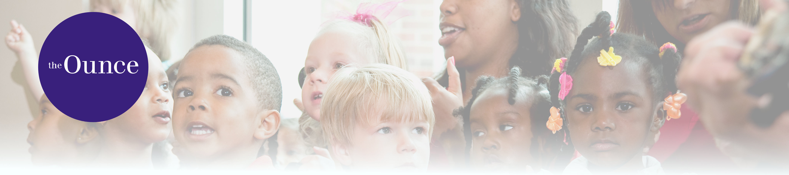
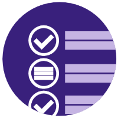
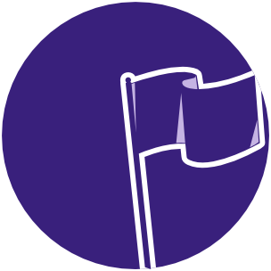

MANAGE
MY TEAM
FIND

TRAINING
UPDATE

MY GOALS
See Past Training
Visit Communities
Find Help with CSOD
Here is some training that the Ounce is featuring.
You have some events coming up.
Please complete the following performance tasks.
Look at the subjects below to find relevant training.
Your Training
My Calendar
Transcript
Pending Evaluations
Reqiored Training